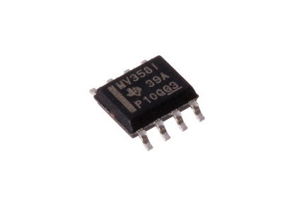
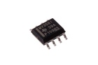
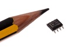
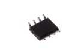

SMD (SOIC-8) LM358 Op Amp - OAS358

Summary
Name: SMD (SOIC-8) LM358 Op Amp
ID: OPAM-SC8-X-KLM358-01
Hex ID: OAS358
WebPage: https://github.com/oomlout/oomlout-OOMP/wiki/OPAM-SC8-X-KLM358-01
Short URL: http://oom.lt/OAS358
Revision History: https://github.com/oomlout/oomlout-OOMP/blob/master/parts/OPAM-SC8-X-KLM358-01/
| Type |
Size |
Color |
Description |
Index |
OPAM
Op Amp |
SC8
8 Pin SMD (SOIC) |
X
|
KLM358
LM358 |
01
|
Images



About
This part is awaiting a description.
Specifications
| Info |
Value |
| Type |
Op Amp |
| Size |
8 Pin SMD (SOIC) |
| Description |
LM358 |
Extra Details
Spotted a mistake, want to add more? Let us know oomp@oomlout.com
All images and resources are licensed [CC BY-SA] unless otherwise stated (ie. the datasheets)